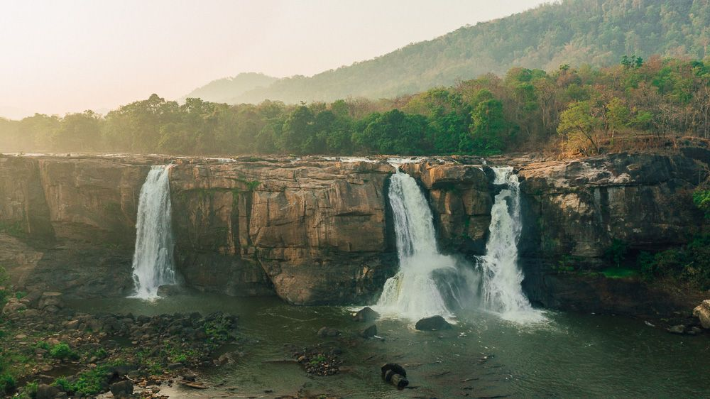
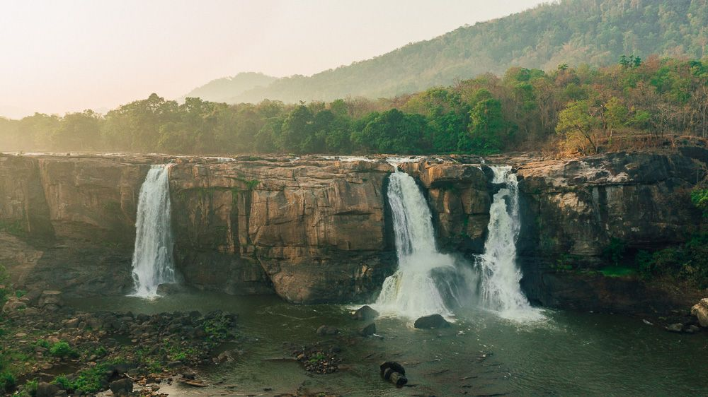
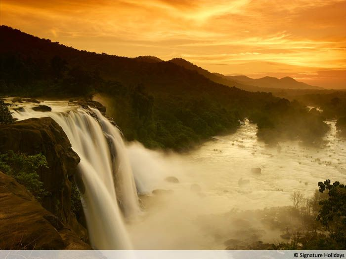
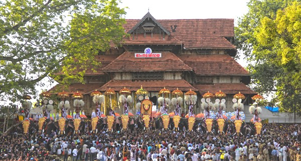
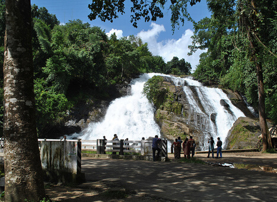
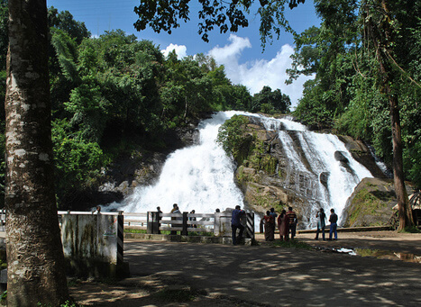

THRISSUR - CULTURE CAPITAL OF KERALA
1. ATHIRAPALLY
 
 In case you are planning an exotic holiday in the midst of wilderness, then all you need to do is to plan a trip to the beautiful waterfalls of Athirappally and Vazhachal located just five km apart. Situated along the fringes of the Sholayar forest ranges, the Athirapally waterfalls plunge down from a staggering height of over 80 ft to join the Chalakudy River.
The largest waterfall in Kerala, the Athirapally waterfall is an important tourist destination in Kerala. Originating as a sliver streak from the high ranges, and crashing through gorges lined with wild bushes and trees the waterfall gains strength and size as it thunders down at its final sojourn before it joins the rivers downstream. It is one of the best places in India to enjoy the serene charm of nature at its best.
The best time to explore the tourist attractions in Athirapally will be during monsoon. An ideal spot to beat a retreat and to be in the lap of nature, Athirappally is easily accessible. Athirappally is bestowed with the best spectacles that you could ask for. The huge shady trees and the water spray from the falls make the whole area cool and refreshing even on a hot sunny day. Close to the dense green tropical forests, the waterfalls offer ample opportunities to explore the diverse flora and fauna. It is home to many important species including the rare Forest Cane Turtle, the endangered Great Indian Hornbill, the Lion-Tailed Macaque and the Nilgiri Langur. You can spot large families of monkeys and giant squirrels jumping across the trees that attract the attention of visitors and shutterbugs alike.

2. VADAKKUMNATHAN TEMPLE


The Vadakkumnathan Temple is among the oldest and most pristine structures in God’s Own Country. It was allegedly built by Lord Parasurama who, according to legends, reclaimed Kerala from the sea. The traditional Kerala style of architecture, carvings and murals depicting scenes from the famous epic Mahabharata, along with many other ancient art relics, make it a must visit site for historians and archaeologists alike.
Step in and you are immediately made aware of the rich tradition of the temple, carefully preserved in its walls to this very day. The temple is also the venue for the annual pooram festival, Thrissur Pooram, in April-May is popular for its cultural value, caparisoned elephants and magnificent fireworks display.
The temple also has a Koothambalam, the traditional temple theatre of Kerala.
Vadakkunnathan Temple is situated on an elevated hillock in the middle of Thrissur City surrounded by a stone wall which covers area 9 acres. This is the only temple where the Shiva Lingam could not be seen because it is covered under a mound of ghee offered as ablution for centuries. The most unique thing is that there is no foul smell from the offered ghee and it does not melt even during summers. The temple is known for its rare temple murals and murals of Vasukishayana and Nrithanatha are worshipped every day. Even though the temple is not connected with it Thrissur Pooram festival the most colorful festival and pride of Thrissur people is conducted in the premises of Vadakkunnathan Temple. The main feature of this festival is the lining of richly adorned elephants, Elanjitharamelam and Chendavadyam. This Poorum festival is done with a belief that worshipping the elephants and giving them healthy food will please Lord Ganesha and remove obstacles from their path.

3. CHARPA FALLS
 
 The mystical Charpa Falls is located in the Athirappilly region of Thrissur district in Kerala. The waterfall falls from a height of 70 feet and is located in between Vazhachal and Athirappilly waterfalls. The source of the waterfall is Chalakudy River, which is also a source of other waterfalls in that region. These waterfalls look mesmerizing and magnificent during monsoon season as the water flows at a speedy rate giving an enchanting and exceptionally beautiful surrounding. The Charpa falls is located at a distance of 60 kilometers from Thrissur. Visit the place for great photography and picturesque views and the best time to visit these splendid waterfalls is from October to February.